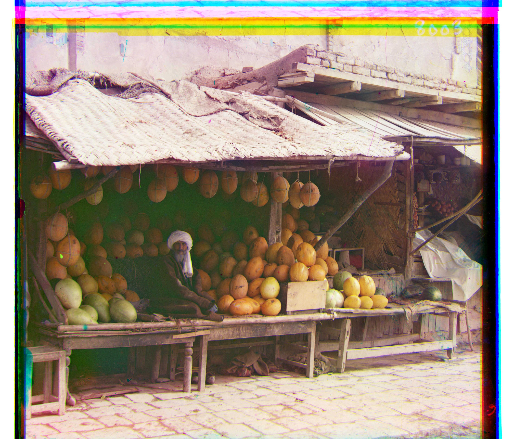
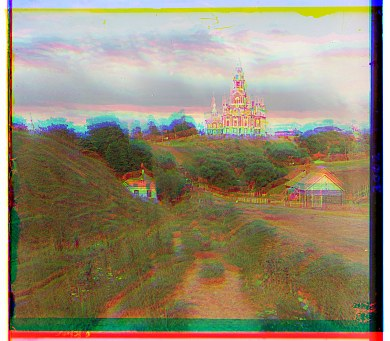
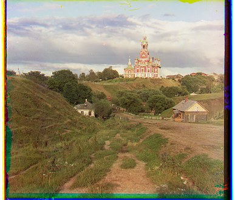

Measure a match
Pixel L2 compares intensities at corresponding positions. The baseline here minimizes the sum of squared differences (SSD), which chooses the same displacement as L2.
SSD = Σ (A − B)² lower is better
THE PROKUDIN-GORSKII COLLECTION
Three monochrome exposures.
One scene, brought back into color.
A project journal on finding correspondence, working across scales, and learning where alignment stops being enough.
Explore the photographs
01 / THE IDEA
Each scan contains three exposures of the same scene, photographed through blue, green, and red filters. Stacking those exposures creates a color image—but small differences in their positions turn object boundaries into colored ghosts.
The task is to find one horizontal and vertical translation for each moving channel. Blue stays fixed; green and red move into register with it. The scan is split into equal-height bands in B–G–R order, then the aligned channels are combined in R–G–B order.
Collection: Library of Congress · Assignment brief
Pixel L2 compares intensities at corresponding positions. The baseline here minimizes the sum of squared differences (SSD), which chooses the same displacement as L2.
Scan borders can look like strong matching features. Candidate shifts are scored on an interior region, with 10% margins and valid overlap, so wrapped pixels do not decide the match.
A pyramid halves each dimension with anti-aliasing until the longest side is at most 375 pixels. Search ±15 there; double the estimate and refine within ±3 at each larger level.
02 / SINGLE-SCALE ALIGNMENT
Exhaustive ±15-pixel search using raw-pixel SSD. No pyramid, gradients, or color corrections.
Cathedral before and after the single-scale pixel-SSD search. This comparison changes only channel positions and removes the invalid overlap; no white balance or contrast adjustment is applied.


03 / MULTI-SCALE ALIGNMENT
All 14 provided scans. View the final notebook outputs, or compare them with the raw-pixel L2 baseline.
| Image | Green (dy, dx) | Red (dy, dx) | Channel size |
|---|
Final-output images are saved from the notebook. The comparison images and offsets were reproduced for this report using the notebook’s translation-search and pyramid structure, with raw-pixel SSD and float32 inputs. Display images are reduced JPEG previews; alignment was evaluated at full input resolution.
QUESTIONS 3–7 / BELLS & WHISTLES
These results follow the grading order: automatic cropping, automatic contrast, automatic white balance, better color mapping, and gradient features.
05 / WHAT REMAINS
People can move between the three exposures. Local color ghosts around a face or hand can remain even when nearby stationary structures agree. A global translation also cannot correct rotation, scale changes, or fractional-pixel offsets.
A surface can be bright through one filter and dark through another. Raw intensity matching can therefore favor the wrong position. Gradient magnitude emphasizes changes in intensity instead, but it still needs a similarity score and a reliable search.
The border detector identifies rows and columns dominated by near-black or near-white pixels. It can mistake bright sky for a margin, miss colored borders, or retain irregular frame fragments. Gray-world white balance assumes average scene color should be neutral; a strongly green landscape may violate that assumption.
ADDITIONAL COLLECTION EXAMPLES
The inspected folder contains the 14 course scans. Three or more independently selected Library of Congress examples have not yet been identified, so this requirement is not represented as complete.
Browse the collection ↗